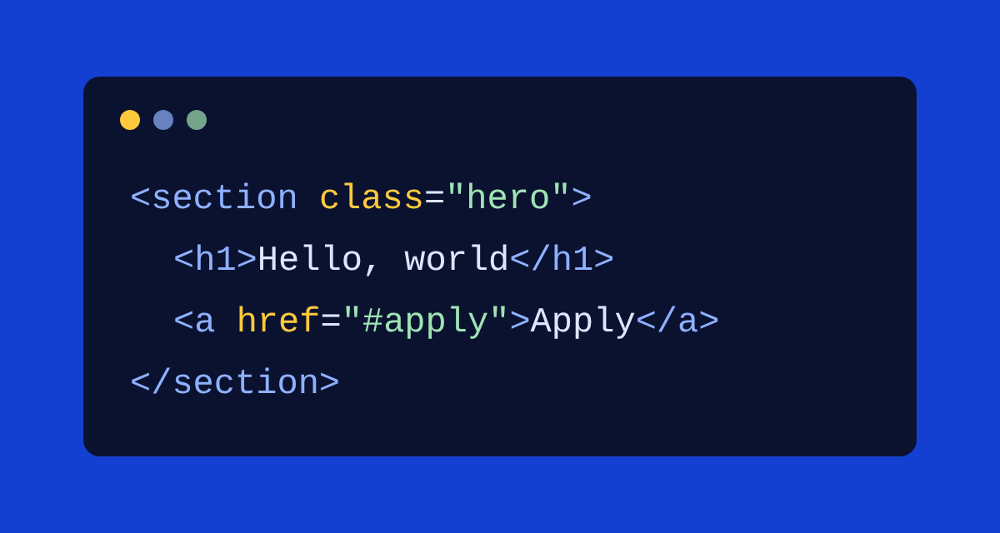

Learn by doing, not just reading.
TechBridge programs are built around practical skills. You work with the tools and tasks used in real technology roles, so what you learn connects directly to real-world experience. Two programs are currently open. Choose the one that fits how you like to solve problems.

PROGRAM 01Web Development
Learn how websites are made, from the structure of a page to how it looks and behaves. You will build web projects, keep track of your work with Git and GitHub, and develop the skills to create websites and web applications.
Skills you will develop
- HTML
- CSS
- JavaScript
- Git/GitHub
- Building web projects
A good fit if you
- like making things you can see and click
- care about how a page looks and feels
- want to turn ideas into working websites
Data Analytics
Learn how to take real-world data, clean it, explore it and turn it into information a business can act on. You will practise the whole path from raw spreadsheet to clear, useful findings.
Skills you will develop
- Spreadsheet analysis
- Data cleaning
- SQL
- Data visualization
- Business-focused analysis
A good fit if you
- like spotting patterns and asking why
- enjoy numbers, spreadsheets and charts
- want to help teams make better decisions
Compare the two programs.
| Feature | Web Development | Data Analytics |
|---|---|---|
| Main focus | Designing and building websites and web applications | Working with data and extracting insights |
| Core skills | HTML, CSS, JavaScript, Git/GitHub | Spreadsheets, data cleaning, SQL, data visualization |
| You will practise | Building web projects | Business-focused analysis |
| A good fit if you like | Creating things people can see and use | Finding patterns and answering questions |
Ready to start building your skills?
Apply for the TechBridge Internship and tell us which program interests you.